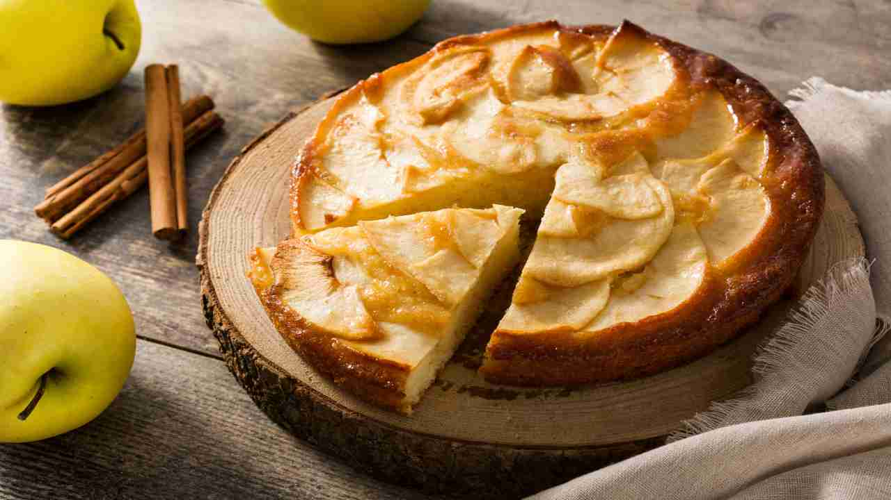

Apple pie

"An apple a day keeps the doctor away..."
So they say, but let's face it when we see the fruit basket on the table, the last fruit we want to eat is definitely the apple.
That's why I want to share my perfect apple pie recipe: soft and quick to make, but above all better than a boring apple!
Ingredients:
- 4 apples (1 kg)
- 1 lemon
- 100 gr butter
- 120 gr sugar
- 250 gr 00 flour
- Backing powder
- 150 gr milk at room temperture
- 2 eggs at room temperture
- 1 tsp cinnamon
- 1 pinch of salt
Instructions:
- To keep aside: melted butter (the microwave is fine) and the treated lemon (separate the zest and the juice).
- Peel the apples and cut them into pieces: I recommend cutting them into 4, then from there remove the core and cut the slices in half. From there cut them into 6-8 similar equal pieces.
- In a bowl, combine the apples, the lemon juice (so they don't turn brown) and a third of the sugar.
- In another bowl, put the eggs and sugar and then whip the mixture. When the mixture is light and frothy, add the melted butter slowly, then finally the pinch of salt and the cinnamon.
- Put the baking powder directly into the flour and add it to the mixture, sifting it a little at a time. If the mixture becomes difficult to stir, add the milk and continue stirring.
- When ready, drain the lemon juice from the apples and add them to the main bowl.
- Grease and sprinkle with sugar in a 22cm cake tin. Optionally, you can decorate with thin apple wedges while the oven is preheated to 180 degrees.
- Put in the oven and, after about 55 minutes, always do the toothpick test: if it is dry then the pie is ready to be served!